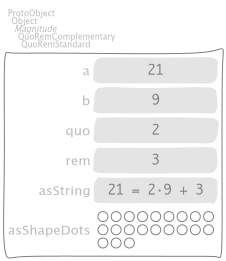
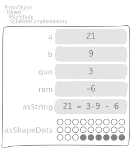
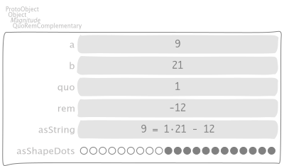
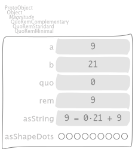
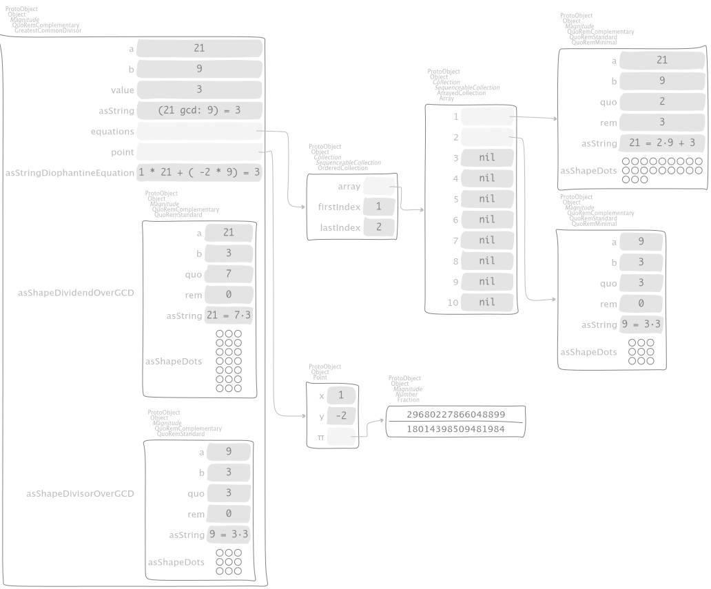
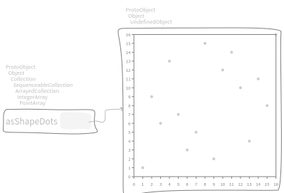
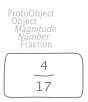

3. Numbers¶
3.1. Bit wizardry¶
The following manipulation have been adapted from [Arn10].
3.1.1. Average without overflow¶
"Integer, protocol *Containers-Essentials"
bitAverage: anInteger
"See 'Matters Computational' (ftxbook) section 1.1.7, Average without overflow."
"Use: x+y == (x^y) + ((x&y)<<1), that is: sum == sum_without_carries + carries."
^ (self bitXor: anInteger) >> 1 + (self bitAnd: anInteger)
"IntegerTest, protocol *Containers-Essentials-Tests"
testBitAverage
| s n m slowBenchResult quickBenchResult seconds |
s := 2.
self timeLimit: (s * 2 + 1) seconds.
n := 38299527986758693756807879086754976930654.
m := 57483879867596837956739087695867359769587.
seconds := s seconds.
quickBenchResult := [ n bitAverage: m ] benchFor: seconds.
slowBenchResult := [ (n + m / 2) asInteger ] benchFor: seconds.
self assert: (n bitAverage: m) equals: (n + m / 2) asInteger.
"For the sake of clarity, a run yields: 730482 < 3673262"
self assert: slowBenchResult iterations < quickBenchResult iterations
3.1.2. Toggling between values¶
"Integer, protocol *Containers-Essentials"
bitToggle: anInteger do: aBlock
"See 'Matters Computational' (ftxbook) section 1.1.8, Toggling between values."
| t x |
t := self bitXor: anInteger.
x := anInteger.
^ aBlock value: [ x := x bitXor: t ]
"IntegerTest, protocol *Containers-Essentials-Tests"
testBitToggleDo
| n m |
n := 38299527986758693756807879086754976930654.
m := 57483879867596837956739087695867359769587.
n bitToggle: m do: [ :toggle |
self
assert: toggle value equals: n;
assert: toggle value equals: m;
assert: toggle value equals: n;
assert: toggle value equals: m;
assert: toggle value equals: n;
assert: toggle value equals: m;
assert: toggle value equals: n;
assert: toggle value equals: m ]
"IntegerTest, protocol *Containers-Essentials-Tests"
testBitToggleDo1
| n m |
n := 1.
m := 0.
n bitToggle: m do: [ :toggle |
self
assert: toggle value equals: n;
assert: toggle value equals: m;
assert: toggle value equals: n;
assert: toggle value equals: m;
assert: toggle value equals: n;
assert: toggle value equals: m;
assert: toggle value equals: n;
assert: toggle value equals: m ]
3.1.3. Next or previous even or odd value¶
"Integer, protocol *Containers-Essentials"
previousEven
"See 'Matters Computational' (ftxbook) section 1.1.9,
Next or previous even or odd value, optimized versions."
^ self - 1 bitAnd: 1 bitInvert
"IntegerTest, protocol *Containers-Essentials-Tests"
testPreviousEven
self
assert: -2 previousEven equals: -4;
assert: -1 previousEven equals: -2;
assert: 0 previousEven equals: -2;
assert: 1 previousEven equals: 0;
assert: 2 previousEven equals: 0
"Integer, protocol *Containers-Essentials"
nextEven
"See 'Matters Computational' (ftxbook) section 1.1.9,
Next or previous even or odd value, optimized versions."
^ (self bitOr: 1) + 1
"IntegerTest, protocol *Containers-Essentials-Tests"
testNextEven
self
assert: -2 nextEven equals: 0;
assert: -1 nextEven equals: 0;
assert: 0 nextEven equals: 2;
assert: 1 nextEven equals: 2;
assert: 2 nextEven equals: 4
"Integer, protocol *Containers-Essentials"
previousOdd
"See 'Matters Computational' (ftxbook) section 1.1.9,
Next or previous even or odd value, optimized versions."
^ (self bitAnd: 1 bitInvert) - 1
"IntegerTest, protocol *Containers-Essentials-Tests"
testPreviousOdd
self
assert: -2 previousOdd equals: -3;
assert: -1 previousOdd equals: -3;
assert: 0 previousOdd equals: -1;
assert: 1 previousOdd equals: -1;
assert: 2 previousOdd equals: 1
"Integer, protocol *Containers-Essentials"
nextOdd
"See 'Matters Computational' (ftxbook) section 1.1.9,
Next or previous even or odd value, optimized versions."
^ self + 1 bitOr: 1
"IntegerTest, protocol *Containers-Essentials-Tests"
testNextOdd
self
assert: -2 nextOdd equals: -1;
assert: -1 nextOdd equals: 1;
assert: 0 nextOdd equals: 1;
assert: 1 nextOdd equals: 3;
assert: 2 nextOdd equals: 3
The following messages return the unmodified argument if it has the required property, else the nearest such value:
"Integer, protocol *Containers-Essentials"
previousEvenOrSelf
"See 'Matters Computational' (ftxbook) section 1.1.9,
Next or previous even or odd value, optimized versions."
^ self bitAnd: 1 bitInvert
"IntegerTest, protocol *Containers-Essentials-Tests"
testPreviousEvenOrSelf
self
assert: -2 previousEvenOrSelf equals: -2;
assert: -1 previousEvenOrSelf equals: -2;
assert: 0 previousEvenOrSelf equals: 0;
assert: 1 previousEvenOrSelf equals: 0;
assert: 2 previousEvenOrSelf equals: 2
"Integer, protocol *Containers-Essentials"
nextEvenOrSelf
"See 'Matters Computational' (ftxbook) section 1.1.9,
Next or previous even or odd value, optimized versions."
^ self + 1 bitAnd: 1 bitInvert
"IntegerTest, protocol *Containers-Essentials-Tests"
testNextEvenOrSelf
self
assert: -2 nextEvenOrSelf equals: -2;
assert: -1 nextEvenOrSelf equals: 0;
assert: 0 nextEvenOrSelf equals: 0;
assert: 1 nextEvenOrSelf equals: 2;
assert: 2 nextEvenOrSelf equals: 2
"Integer, protocol *Containers-Essentials"
previousOddOrSelf
"See 'Matters Computational' (ftxbook) section 1.1.9,
Next or previous even or odd value, optimized versions."
^ self - 1 bitOr: 1
"IntegerTest, protocol *Containers-Essentials-Tests"
testPreviousOddOrSelf
self
assert: -2 previousOddOrSelf equals: -3;
assert: -1 previousOddOrSelf equals: -1;
assert: 0 previousOddOrSelf equals: -1;
assert: 1 previousOddOrSelf equals: 1;
assert: 2 previousOddOrSelf equals: 1
"Integer, protocol *Containers-Essentials"
nextOddOrSelf
"See 'Matters Computational' (ftxbook) section 1.1.9,
Next or previous even or odd value, optimized versions."
^ self bitOr: 1
"IntegerTest, protocol *Containers-Essentials-Tests"
testNextOddOrSelf
self
assert: -2 nextOddOrSelf equals: -1;
assert: -1 nextOddOrSelf equals: -1;
assert: 0 nextOddOrSelf equals: 1;
assert: 1 nextOddOrSelf equals: 1;
assert: 2 nextOddOrSelf equals: 3
3.2. Horner’s rule¶
Let
"SequenceableCollection, protocol *Containers-Essentials"
horner: base init: init
^ self
inject: init
into: [ :acc :each | (acc multiplyNumber: base) addNumber: each ]
in
"MWVisualizationsTest, protocol tests"
testSequenceableCollectionHornerInit
| tree metadata result handlerExecution handlerCopying presenter |
tree := CTOrderPreservingTree new.
handlerExecution := MWHandlerProfiling new
tree: tree;
yourself.
handlerCopying := MWHandlerReceiverArgumentsCopying new
handler: handlerExecution;
yourself.
result := (MWSession withAllImplementations: {
(SequenceableCollection >> #horner:init:).
"(Collection >> #inject:into:)."
(Number >> #addNumber:).
(Number >> #multiplyNumber:) })
do: [ :each | each handler: handlerCopying ];
value: [ { 1. 3. 5. 6 } hornerBase10 ].
metadata := IdentityDictionary new.
handlerExecution metadata: metadata.
handlerCopying metadata: metadata.
"Show here the new presenter."
presenter := (MWSpPresenter on: tree -> metadata)
useShapeSlotsDfsTree;
openWithSpec;
yourself.
self
assert: tree size equals: 9;
assert: result equals: 1356.
self
export: tree
pathSuffix: 'sequence-diagram'
onCanvasDo: [ :aCanvas :useless | presenter currentCanvas: aCanvas ];
exportSlotsGraphOf: result
that admits the profiling,
3.3. Quotients and remainders¶
Lets divide \(21\) by \(9\),
"SymbolicIntegerTest, protocol tests"
testStandardQuoRem21Over9
| quoRem |
quoRem := 21 /% 9.
self assert: quoRem equals: 21 / 9.
^ self exportSlotsGraphOf: quoRem

by means of the binary message
"Integer, protocol *Containers-Essentials"
/% anObject
^ anObject quoRemInteger: self
that dispatches
"Integer, protocol *Containers-Essentials"
quoRemInteger: anInteger
^ QuoRemStandard a: anInteger b: self
which instantiate a symbolic Magnitude object via the class-side message
"QuoRemComplementary class, protocol as yet unclassified"
a: a b: b
^ self basicNew
a: a;
b: b;
initialize;
yourself
where both the quotient and the remainder are computed in the overridden
"QuoRemStandard, protocol accessing"
initialize
super initialize.
quo := self value floor.
rem := a - (quo * b)
as the usual computation does and the assertion checks in the initial test case.
The same division can be carried out by
"SymbolicIntegerTest, protocol tests"
testComplementaryQuoRem21Over9
| quoRem |
quoRem := 21 /%~ 9.
self assert: quoRem equals: 21 / 9.
^ self exportSlotsGraphOf: quoRem

that yields a negative remainder, shown by full dots. To do that, we have the following messages chain
"Integer, protocol *Containers-Essentials"
/%~ anObject
^ anObject quoRemComplementaryInteger: self
that dispatches
"Integer, protocol *Containers-Essentials"
quoRemComplementaryInteger: anInteger
^ QuoRemComplementary a: anInteger b: self
which instantiate a symbolic Magnitude object of class
Magnitude << #QuoRemComplementary
slots: { #a . #b . #ratio . #quo . #rem };
tag: 'Numbers';
package: 'Containers-Essentials'
Both the quotient and the remainder are computed in the initialization message
"QuoRemComplementary, protocol accessing"
initialize
ratio := a / b.
quo := self value ceiling.
rem := a - (quo * b)
The latter representation is uniform in the sense that it yields a rectangle of dots
that are stacked horizontally, where the number of rows equals the quotient of the division
while the number of columns equals the divisor denoted by the instance variable b.
"SymbolicIntegerTest, protocol tests"
testComplementaryQuoRem9Over21
| quoRem |
quoRem := 9 /%~ 21.
self assert: quoRem equals: 9 / 21.
^ self exportSlotsGraphOf: quoRem

"SymbolicIntegerTest, protocol tests"
testQuoRem9Over21
| quoRem |
quoRem := 9 /% 21.
self assert: quoRem equals: 9 / 21.
^ self exportSlotsGraphOf: quoRem

"SymbolicIntegerTest, protocol tests"
testQuoRemMinimal9Over21
| quoRem |
quoRem := 9 /%< 21.
self assert: quoRem equals: 9 / 21.
^ self exportSlotsGraphOf: quoRem

3.4. Greatest Common Divisor¶
"SymbolicIntegerTest, protocol tests"
testGCDof9and21
| quoRem |
quoRem := 9 >|< 21.
self assert: quoRem equals: (9 gcd: 21).
^ self exportSlotsGraphOf: quoRem

"SymbolicIntegerTest, protocol tests"
testGCDof12and21
| quoRem |
quoRem := 12 >|< 21.
self assert: quoRem equals: (12 gcd: 21).
^ self exportSlotsGraphOf: quoRem

3.5. Diophantine equations¶
3.5.1. Coprimes¶
"SymbolicIntegerTest, protocol tests"
testGCDof83and71
| quoRem |
quoRem := 83 >|< 71.
self assert: quoRem equals: (83 gcd: 71).
^ self exportSlotsGraphOf: quoRem

3.5.2. \(\mathbb{Z}_{17}\) field¶
"SymbolicIntegerTest, protocol tests"
testGCDofZ17
| field prime interval |
prime := 17.
interval := 1 to: prime - 1.
field := interval collect: [ :each | each >|< prime ].
self
assert: field
equals: (interval collect: [ :each | prime gcd: each ]).
^ self exportSlotsGraphOf: field

"SymbolicIntegerTest, protocol tests"
testGCDofMultiplicativeInversesInZ17
| gcds inverses |
gcds := self testGCDofZ17.
inverses := PointArray new: gcds size.
gcds withIndexDo: [ :each :index |
inverses at: index put: each b @ each inverseMultiplicativeOfb key ].
^ self exportSlotsGraphOf: inverses

3.5.3. \(GCD(f_{n}, f_{n+1})\), where \(f_{n}\) is the \(n\)-th Fibonacci number¶
"SymbolicIntegerTest, protocol tests"
testGCDofAdjacentFibonacciNumbers
| fibs gcds |
fibs := OrderedCollection with: 1 with: 1.
3 to: 11 do: [ :i | fibs add: (fibs at: i - 2) + (fibs at: i - 1) ].
gcds := fibs
with: fibs allButFirst , { (fibs lastButOne + fibs last) }
collect: [ :r :s | r >|< s ].
self assert: gcds equals: (gcds collect: [ :each | 1 ]).
^ self exportSlotsGraphOf: gcds
3.5.4. Kissing Fractions¶
Consider the Fraction
"EssentialsObjectTest, protocol tests"
testInspectFractionForKisses
^ self exportSlotsGraphOf: 4 / 17

which kisses other fractions, by tangents of Ford’s circles
"EssentialsObjectTest, protocol tests"
testInspectFractionKissing
| aFraction |
aFraction := self testInspectFractionForKisses.
self assert: aFraction kissingFractions equals: {
(1 / 5).
(2 / 9).
(3 / 13).
(4 / 17).
(1 / 4).
(1 / 3).
(1 / 2) }.
^ self exportShapeOf: aFraction accessorBlock: #asShapeFordCircles

where
"Fraction, protocol *Containers-Essentials"
kissingFractions
| kissedFractions vl |
kissedFractions := Set new.
vl := ValueLink new
value: self asFractionWrtFloor;
yourself.
[ vl ] whileNotNil: [
| gcd diophantinePoint next less aFraction |
aFraction := vl value.
kissedFractions add: aFraction.
gcd := aFraction numerator >|< aFraction denominator.
diophantinePoint := gcd point.
next := diophantinePoint x / diophantinePoint y negated.
less := aFraction numerator - next numerator
/ (aFraction denominator - next denominator).
vl := next kissingFractionLink:
(less kissingFractionLink: vl nextLink) ].
^ kissedFractions asArray
sort;
yourself
and the polymorphism on #kissingFractionLink: reads as follows
"Fraction, protocol *Containers-Essentials"
kissingFractionLink: aLink
^ self ~~> aLink
"Integer, protocol *Containers-Essentials"
kissingFractionLink: aLink
^ aLink
Moreover, consider the reciprocal
"EssentialsObjectTest, protocol tests"
testInspectFractionReciprocalKissing
| aFraction |
aFraction := self testInspectFractionKissing reciprocal.
self assert: aFraction kissingFractions equals: {
(1 / 4).
(1 / 3).
(1 / 2) }.
^ self exportShapeOf: aFraction accessorBlock: #asShapeFordCircles
which yields a simpler visualization.
3.6. Skew Binary Canonical sparse representation¶
Using the conversion message
"Integer, protocol *Containers-Essentials"
asSkewBinaryCanonicalSparse
| skew |
skew := SkewBinaryCanonicalNumber new.
self timesRepeat: [ skew := skew increment ].
^ skew
we can inspect by means of the test case
"EssentialsObjectTest, protocol tests"
testInspectSkewBinaryCanonicalSparse
| skewNumbers backwards |
skewNumbers := (1 to: 20) collect: [ :each |
each asSkewBinaryCanonicalSparse yourself: [ :skew |
self assert: skew asInteger equals: each ] ].
self exportSlotsGraphOf: skewNumbers pathSuffix: 'increasing'.
backwards := skewNumbers reversed
with: (19 to: 0 by: -1)
collect: [ :skew :each |
skew decrement yourself: [ :previous |
self assert: previous asInteger equals: each ] ].
self exportSlotsGraphOf: backwards pathSuffix: 'decreasing'
that does its asserts using the backward conversion message,
"SkewBinaryCanonicalNumber, protocol converting"
asInteger
| value |
value := 0.
representation do: [ :each | value := value + each ].
^ value
